Yes Or No - Making Decisions¶

In this lesson, we are going to learn how to use command blocks that enable branching and how to build complex conditions based on which decisions are made. We will systematize the blocks that enable the realization of the basic elements of the program logic in Scratch. We will get to know more blocks from the Sensing group, as well as show how to use the image editor in vector mode.
Commands with Branches
In projects that have a simple linear structure, each command runs only once. In the previous lesson, we learned about the C-blocks - blocks describing the cycle, which allow other commands, which are inserted into them, to run multiple times. Apart from the blocks describing the cycle, the blocks that enable branching also have an entrance for a script. Depending on whether the branching condition is fulfilled, the entered commands will be executed or not.
The branching command that corresponds to the C-block has one script entrance, in addition to the logical expression input field. While the branching command that corresponds to the E-block has two script entrances. If the branching condition has been fulfilled, the first command will allow the running of commands entered into the if…then “mouth”, and if not, these commands will not be executed, and the program will proceed to the else part of the block, which describes what should be done in case the condition has not been fulfilled.
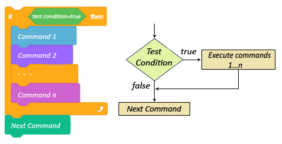{kind=link}
The second conditional branching command skips some commands depending on whether the branch condition has been fulfilled or not. If the condition is fulfilled, the commands from the NO branch will not run. If the condition is not fulfilled, the commands from the YES branch will not run.
Therefore, unlike the simple linear programs, where each command runs exactly once, and loops where there are commands that can run multiple times (within the loop body), in programs with branches there are commands that will not run, not even once.
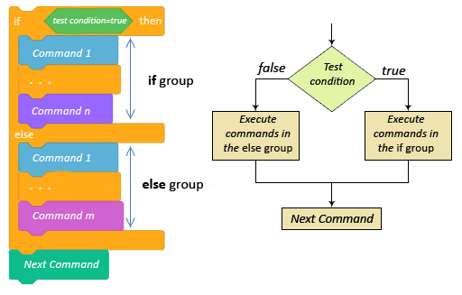{kind=link}
The Basic Elements of the Program Logic in Scratch
As we said previously, the scripts describe the behavior of the objects to which they are attached. All behavior scenarios, however complex, are made up of combinations of basic elements of the program logic, these are:
steps sequences,
repetition and
branching.
In computer science, instead of the term script we use the term algorithm. The term algorithm has been known for centuries, but it gained a special meaning with the introduction of computers. We can say that an algorithm is any set of understandable and precise instructions on how to solve a given task.
Crossing the street, preparing food by following a recipe, making a phone call, solving a math problem - everything comes down to execution of individual elementary operations in a given order. In algorithms, these elementary operations are called commands, steps or orders.
An algorithm can be given, more or less precisely, by using words. However, a graphical record of an algorithm provides a much better insight into the structure and order in which the instructions are executed. The graphical scheme, which indicates with its symbols the nature of individual algorithmic steps, is called a block diagram. Block diagrams use special symbols to record individual types of algorithmic steps.
The main goal of a block diagram is to indicate the sequence of execution of individual algorithmic steps. It provides a clear link between the details and the whole of the algorithm and makes it easy to detect errors in its structure.
The structure of an algorithm can be linear, or it can include branches or loops. In algorithms with a simple linear structure, the steps are executed one after the other, from start to finish. In algorithms with branches, there are several alternative execution routes. Depending on the data, some steps will not be performed at all. In algorithms with loops, some steps can be performed multiple times.
The following figure shows a block diagram for calculating the value of x based on a given input value, with the use of three algorithm types: with simple linear, with branches and with loops.
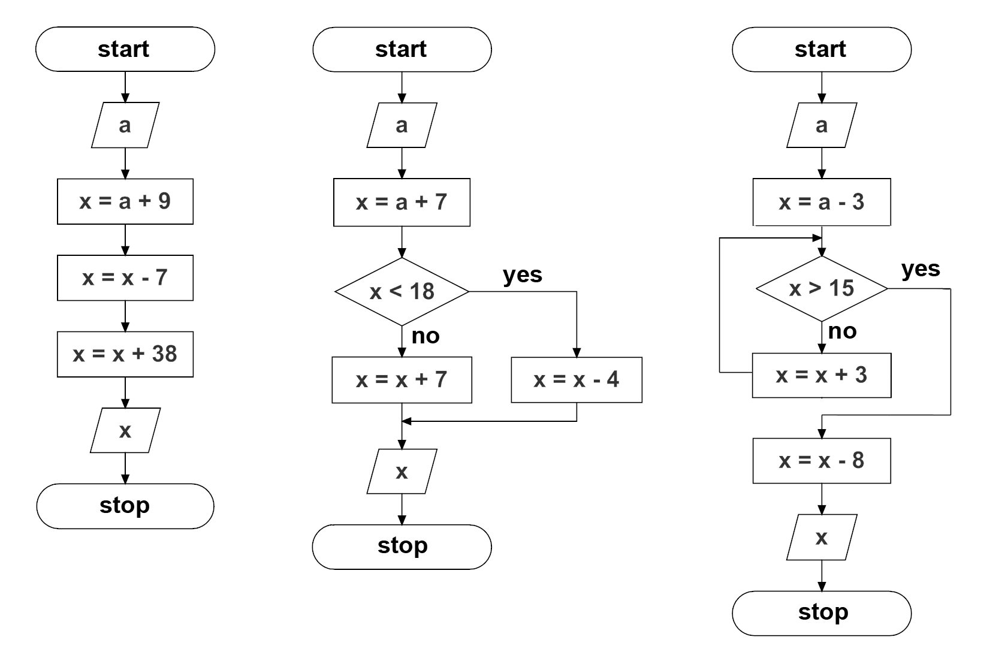{kind=link}
The examples are taken from the mathematics textbook for the second grade of primary school. Try to answer the following questions based on them.
What will be the value of х after the execution of each of the algorithms if the input value is а=5, and what if it is а=16?
In an algorithm with branches, which of the steps will not be performed if а=5, and which if а=16?
How many times will the addition х=х+3 be performed in an algorithm with loops if а=5, and how many times if а=16?
The following figures show how these algorithms would be written in Scratch.
The first algorithm, which has a linear structure, corresponds to the script that has a sequence of steps.

The second algorithm, which has branches, corresponds to the script that has branches.
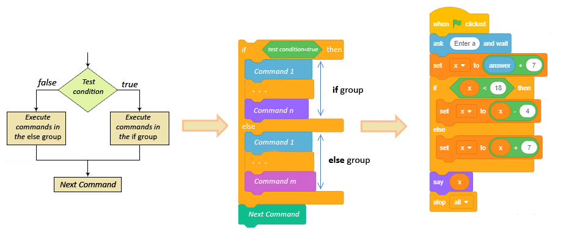{kind=link}
The third algorithm, which has loops, corresponds to the script that has commands for repetition.

Scripts in Scratch look like algorithms written with block diagrams.
Functions of blocks from the group Sensing
The Sensing group is made up of blocks that allow the project to accept input from different devices, much like humans use senses to collect information from their environment. There are blocks, which store data that correspond to the data a person would collect with the sense of touch, sight or hearing. Some blocks in this group allow different actions to be triggered depending on the sprite’s position, as well as depending on time, date, etc. In this lesson, we will introduce the blocks that:
store information about the position of the sprite relative to the mouse pointer and other objects,
enable input data by using the keyboard,
store information on ongoing operations performed by the mouse and keyboard.
The remaining blocks from the Sensing group will be introduced in the following lessons, and a full overview of their functions is given in the part Appendix.
Study the following examples¶
Example 1 - Project “Selection”¶
In this project, the old wizard needs to choose an assistant.

He can’t decide on his own which assistant to choose, so he asks the user to help him by entering the number of one of the candidates.
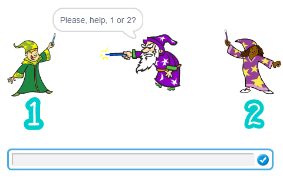{kind=link}
This value is compared with the conditional statement containing the candidate number. If the user enters number 1, the wizard will turn to the left, toward the candidate number 1; otherwise, he will turn to the right toward the candidate number 2.
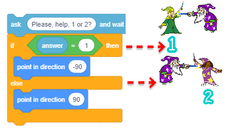{kind=link}
The complete script describing the behavior of the wizard is presented in the figure below.
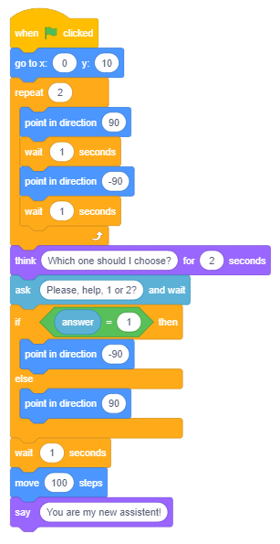{kind=link}
Example 2 - Project “Dangerous Snowflakes”¶
The Dangerous Snowflakes project is a simple game where the user tries to save the Snowman from large, dangerous, and continuously falling snowflakes. The user uses the arrow keys on the keyboard to guide the Snowman from left to right trying to avoid snowflakes that fall at different speeds and angles from the top of the screen. If a snowflake touches the Snowman, it will swell up, its shape will become deformed, and the game will be over.
Sprites and Backdrops
When you start this new project, load the Slopes backdrop and sprites Snowflake and Snowman from the library. Place the Snowman sprite in the lower right corner of the stage, and you can start programming.
Behavior of a Snowflake
To introduce uncertainty, it is necessary to enable the snowflakes to appear at different places and fall at different speeds and in different directions.
We will achieve this by using the block  .
.
A snowflake should appear at the top of the stage and glide to the bottom. The following commands describe this movement.
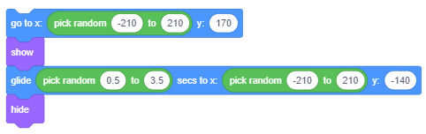{kind=link}
The first command places the snowflake in the position for which the x coordinate will be generated randomly. The third command sets the position towards which the snowflake will glide between 0.5 and 3.5 seconds; when it reaches this position, the snowflake will disappear.
We will insert this stack of commands into the loop, which will repeat until the snowflake touches the Snowman. When the snowflake touches the Snowman, the game will be over.
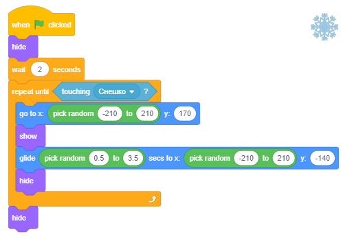{kind=link}
Behavior of the Snowman
The Snowman has three scripts attached to it - reactions to the user clicking on the green flag, and pressing the right or the left arrow key on the keyboard.
In the beginning, the Snowman gives instructions for how to play the game, and in the forever loop checks whether it has been touched by a snowflake. If the answer is yes, it will broadcast that the game is over, and it will stop the running of all scripts.
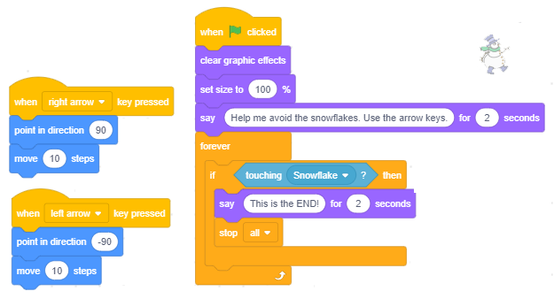{kind=link}
To make the game more attractive, we will add special effects. This can be done by using the blocks from the group Looks.
As we saw in Example 2 of the lesson Sequencing, the command  can change the sprite in multiple ways.
can change the sprite in multiple ways.
When the snowflake touches the Snowman, we will change its size and apply the effects fisheye and color. We will repeat these changes five times, pausing briefly after each change (figure A). To make sure that the Snowman is not deformed when the program starts running again, in the beginning, we will clear all graphic effects and set the size to 100% (figure B).
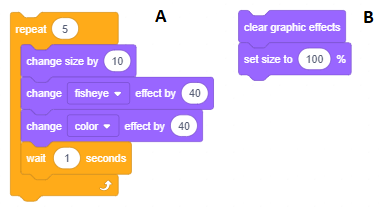{kind=link}
Example 3 - Project “Day and Night”¶
In this project, two sprites, a cat and a dog, behave differently depending on whether it is day or night.
There are two small houses on the stage; one belongs to the cat and one to the dog. There are two backdrops added to them - day and night.
On the backdrop day you can see the sun, light blue sky and grass. On the backdrop night everything, except for the houses, is dark blue, and you can see stars and a waxing crescent moon in the sky. The day and night backdrops alternate every 5 seconds.
When it is daytime, the cat and the dog come out of their houses and chase one another. The cat runs around in a circle and the dog points toward the cat and tries to come closer to it.
When it is night-time, the cat and the dog go back to their houses and keep still.

Creating Sprites
Delete the Sprite1 and then upload the Dog2 sprite and the Cat2 sprite, from the library. The dog has three costumes, but we will use only the first two, so you can delete the third. The cat has only one costume, and since we want to make a motion animation, we will have to draw another one. To create the second costume for the cat, we will use the paint editor in the vector mode. By right-clicking on the cat sprite, we will open the shortcut menu from which we can select the option Duplicate.
This way we get a new costume, Cat3, which we will change with the steps presented in the following figure.
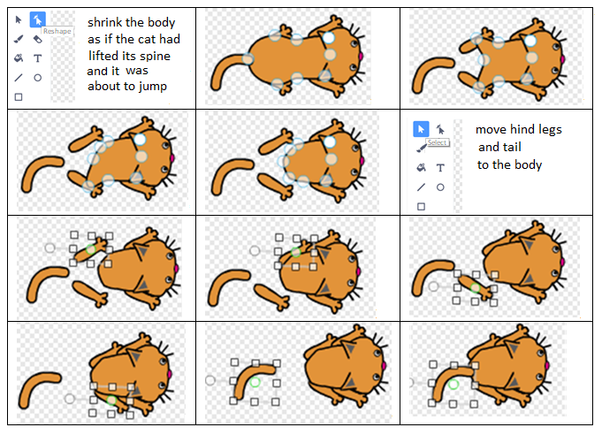{kind=link}
Creating the Backdrop
Click on the button Choose a Backdrop (on the right, next to the sprite list), and then choose the option Paint.
From the palette, containing vector tools choose  , and the drawing mode should have the fill color turned off. Draw a small house, as shown in the following figure.
, and the drawing mode should have the fill color turned off. Draw a small house, as shown in the following figure.

Since you used the tool to group the objects, which make up the house, you can use the tool  to duplicate it. Once you have done this, put the copy in the lower right corner of the stage, and the original house in the upper left corner.
Then set the size of both sprites so they can fit inside their houses.
to duplicate it. Once you have done this, put the copy in the lower right corner of the stage, and the original house in the upper left corner.
Then set the size of both sprites so they can fit inside their houses.
Now, we will move on to painting, and we will use the tool . The application of this tool, when it comes to filling in certain areas, is not the same as in the raster (bitmap) mode.
If the area is not closed, in raster mode the paint will “leak” onto the whole image. In vector mode, this does not happen - you will not be able to paint it at all.
This is why you should first “close” the area you want to paint.
This is done by using the tool  , you should click on the image, and then you select the part of the image that is not connected (2) and attach it to the rest of the image (3). Then, by using the tool , you can paint both the interior (4) and the lines that form the area (5).
, you should click on the image, and then you select the part of the image that is not connected (2) and attach it to the rest of the image (3). Then, by using the tool , you can paint both the interior (4) and the lines that form the area (5).
{kind=link}
Since we used the tool for drawing, there shouldn’t be any problems when we paint.
In the following figure, you can see the result of painting parts of the house and how it is done.
{kind=link}
When you finish painting the houses, multiply this background.
We will add to the first backdrop, so it represents night-time, and to the second, so it represents daytime.
Creating the night-time backdrop
Draw a filled dark blue rectangle across the entire stage, then using the tool Back  set this rectangle behind both houses. The same thing can be done with the tool Layer back , but you will have to click on the stage as many times as there are layers in the image.
When both houses are visible, you can start drawing the moon and the stars.
set this rectangle behind both houses. The same thing can be done with the tool Layer back , but you will have to click on the stage as many times as there are layers in the image.
When both houses are visible, you can start drawing the moon and the stars.
A waxing crescent moon can be drawn by first drawing a filled yellow circle (1) and then partially drawing a larger circle filled with the backdrop color (2) over it.
A star can be created by drawing a white triangle (3), which we can then duplicate and rotate (4) and finally fill in the entire shape with white (5).
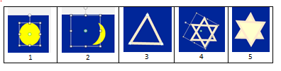{kind=link}
Now you can copy the finished stars and arrange them around the stage, some of them you can make smaller and some larger. With this, the night-time backdrop is finished.

Creating the daytime backdrop
Draw the sun with the tool , and for the rays, you can use the tool  . Then draw a large rectangle filled in with light blue color, the width of the rectangle should be the same as the stage. Place it as many layers back as necessary to see all the details on the stage.
(If you were to draw the sky first, and the sun second, you would be able to put the sky rectangle in the appropriate layer faster. This way you need to go back underneath all the rays of the sun).
. Then draw a large rectangle filled in with light blue color, the width of the rectangle should be the same as the stage. Place it as many layers back as necessary to see all the details on the stage.
(If you were to draw the sky first, and the sun second, you would be able to put the sky rectangle in the appropriate layer faster. This way you need to go back underneath all the rays of the sun).
Then draw a rectangle filled with green, as wide as the stage, draw grass as send it to the background of the image.
The process of creating the daytime backdrop is presented in the figure below.
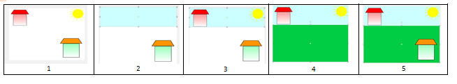{kind=link}
Since we are done creating the backdrop daytime, we can now start writing the script, which will define the behavior of the sprites.
Synchronization of events in the Project Day and Night
In this project, the behavior is dictated by the backdrop. It broadcasts the messages day and night, to which both sprites respond.
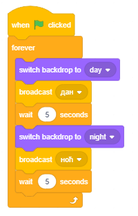{kind=link}
The following figures represent scripts added to the sprites, from which you can see how they react to these messages.
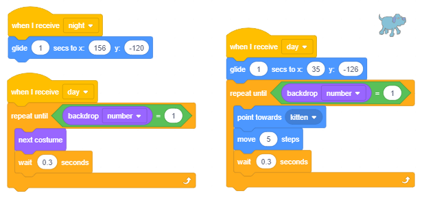{kind=link}

Did you understand?¶
Question 1¶
- yes
- no
- The condition 1=1 is not fulfilled.
Q-1: Will the sprite say Hello after the execution of the condition command?
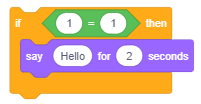{kind=link}
Question 2¶
- yes
- Since the value of the expression 1=2 is always false, the command from the YES branch will never run.
- no
Q-2: Will the sprite say Hello after the execution of the condition command?
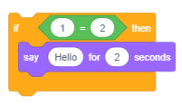{kind=link}
Question 3¶
- 5
- False 5<5
- -5
- True.
- 0
- True.
- 10
- False 10<5.
Q-3: Which of the user’s answers will allow the execution of the command in the YES branch?
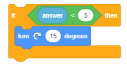{kind=link}
Question 4¶
- Bring an umbrella.
- Nothing will be said
- In that case, the condition for branching is fulfilled.
Q-4: What will the sprite say if, when asked Is it raining?, the user answers Yes?

Question 5¶
- The condition is fulfilled.
- The condition is not fulfilled.
- Since the value of the expression А=А is always true, the command from the YES branch will be executed.
Q-5: What will the sprite say after the execution of the condition command?

Question 6¶
- yes
- Since the value of the expression А=B is always false, the command from the NO branch will be executed.
- no
Q-6: Will the sprite appear after the execution of the condition command?

Question 7¶
- different regardless of the position of the sprite
- In both cases, the condition that has to be fulfilled for the sentence "You are in the center of the stage" to be said, is the same.
- the same regardless of the position of the sprite
- different if the y is not 0
- In this case, the condition is not fulfilled in any of the blocks (A) or (B), and "You are in the center of the stage" will not be said.
- different if the x is not 0
- In this case, the condition is not fulfilled in any of the blocks (A) or (B), and "You are in the center of the stage" will not be said.
Q-7: What is the result of the execution of the block commands (А) and (В)?

Question 8¶
- Explicitly determines that х=0 and у=0.
- These are the coordinates of some of the points on the diagonal of the coordinate system, they can be (0,0), but they don't have to be.
- These are the coordinates of some of the points on the x-axis or y-axis. It may also be the point where they intersect, but it does not have to be.
Q-8: Which of the condition commands has the right condition for the statement - location coordinates of the sprite are (0,0), i.e. the sprite is in the center of the stage? (Select all correct answers)
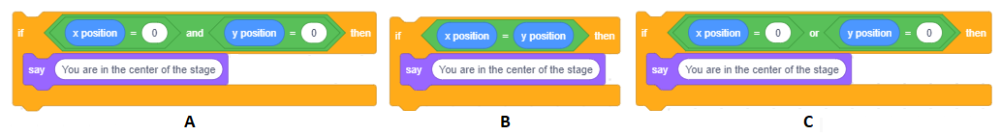{kind=link}
Question 9¶
- The remainder, after the number has been divided by 6, is 0.
- The number 2 and 3 satisfy this condition, but they cannot be divided by 6.
- The number 11 satisfies this condition, but it cannot be divided by 6.
- The number can be divided by both prime factors of the number 6.
Q-9: In the project Making a Decision we showed how the operation mod is used to check whether a certain number can be divided by 2. Which of the following conditions allows you to check whether the number you enter can be divided by 6? (Select all correct answers)
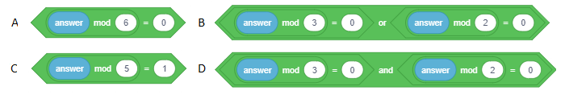{kind=link}
Try it!¶
Exercise 1¶
When the user is expected to enter some kind of information, we need to ask a question that suggests the expected form of the answer, for example: “Enter your date of birth (dd/mm/yy)”. Formulate the input questions for entering:
а) A number between 1 and 10
A number between -1.0 and 2.25
Name and surname
Weight
Height
Exercise 2¶
The program, which should calculate the ideal weight, requires the user to enter his/her weight (in kg) and height (in cm). Write parts of the program that check if the user has entered the correct weight data, e.g. from the interval [40,160] and height, e.g. [140,210].
Exercise 3¶
Write what should be the arguments of the operation for it to generate numbers from the set:
а) {0, 1}
{0, 1, 2, 3, … , 10}
{–2, 0, 2, 4, 6, 8}
{0, 10, 20, 30, … , 100}
{0, 0.1, 0.15, 0.26, 0.38, … , 1.0}
Check your answers by testing what will the appropriate operation return for each example in the loop that should be repeated 5 times.
Instruction:
The whole block of commands is given for the example a), and for the others, only the part which generates numbers that should be inserted into the block say.
From example e), you can see that it is enough to put just one limit that has a decimal point to generate decimal numbers.

Exercise 4¶
Write the condition command with a complex condition equivalent to the following compositions of condition commands:

Check your answers by testing them in the Scratch environment.
Exercise 5¶
Create a mini-project called Greater in which the sprite asks the user to insert a number between 1 and 100. The program chooses a number (by using the random number operator block) also between 1 and 100 and then tells the user whose number is greater. The dialogue should be initiated by clicking on the sprite.
Instruction:

Debug it!¶
Bug 1¶
- Question
The student wanted to create a script that allowed the movement of the sprite to be controlled by arrows. He/she wrote the program shown in the figure on the left. Then the student noticed that the command is repeated 4 times, so he/she changed the script into the program presented in the figure on the right. However, the student did not achieve the desired behavior of the sprite. Where did the student make a mistake?

Answer:
In the changed program, the command will run continuously and the sprite will move in the direction that was chosen last, regardless of whether the key with that direction has been pressed or not.
Bug 2¶
- Question
The student wanted to change the behavior of the candidates for the position of wizard’s assistant in the project “Selection”. When the wizard chooses the girl, the boy should think to himself “Why did you choose her?”. This is why he/she added the following script to the boy sprite. However, the added thought was put at the very beginning of the program, before the wizard chose anyone. How can you coordinate the activities of the boy and the wizard?

Answer:
One way is to make the wizard broadcast the message that he has made his decision, and then allow the boy to react when he receives this message. Of course, if we don’t want the boy to react when the wizard chooses him, then we have to expand this communication by adding the part where the program will check which of the candidates was selected.
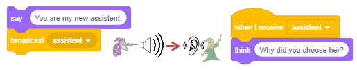{kind=link}
Bug 3¶
- Question
The student wanted his sprite, which is controlled with the arrow keys left and right, to keep saying the word “left” while it is on the left half of the stage, and the word “right” while it is on the right half of the stage. He/she added the following scripts to the sprite, but it kept saying the same word no matter where on the stage it was located. What should be changed in the scripts?

Answer:
The program checks on which half of the stage the sprite is located only at the beginning. This check should be inserted into a forever loop.
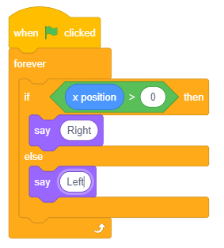{kind=link}
 Summary¶
Summary¶
In this lesson, we learned about the branching commands that allow you to create branching scripts. We introduced the blocks from the Sensing group and showed how the command for entering data by using the keyboard is executed in Scratch. We also learned how to synchronize the behavior of sprites by using message broadcasting. Furthermore, we showed how to use tool in the vector mode of the built-in paint editor.
New concepts: structure with branches, complex condition.
Scratch commands:  - 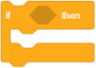,
- 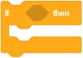,  ,
,  ;
;  - 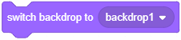,
- 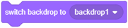,  ;
;  - ;
- ;  -
-
 Create a projects¶
Create a projects¶
Project 1 – “Falling Apples”¶
Create a game with a scenario similar to the project “Dangerous Snowflakes”. The main sprite of this project should be a boy sprite, whose movement is controlled with the left and right arrow keys. He should avoid apples that appear at random positions in the upper part of the stage and glide down to random positions in the lower part of the stage. If an apple touches the boy at any point, the game will be over, if they don’t touch him, they hide and reappear in the upper part of the stage and glide down. The glide speed should also be set randomly, for example, between 1 and 3 seconds. To make the game more exciting, once you are done making the first apple sprite, multiply it, so there are, for example, 3 apples repeating the appropriate behavior.
Project 2 - “Hungry Shark”¶
Create a project in which the shark sprite is chasing fish. The shark should cruise left to right constantly, and when the space bar is pressed, it should move upward. If the shark sprite touches a fish, the fish will disappear, and then reappear after 3 to 5 seconds in a random position. Different duration of the pause between the disappearance and the reappearance of a fish and different locations can be achieved by using the operation random number. The shark sprite (Shark2) has three costumes, so changing the costume can represent the reaction of the shark when it touches a fish. Attribute different movement to the fish sprites, crab sprite and the jellyfish sprite. The jellyfish should move up and down, the crab should move left and right, and fish should move at different speeds. All sprites - shark, different types of fish, the crab and the jellyfish, as well as the backdrop can be taken from the sprites and backdrop libraries. You can make different types of fish by using different costumes of the sprite Fish.
Project 3 - “A dog and a cat”¶
Create a project where you will use two sprites - a dog and a cat, as well as two backdrops. In the beginning, the cat slowly moves left and right between the edges of the stage, and its thoughts should appear in the cloud of the block think. After 10 seconds, the dog sprite should appear, it starts barking, and it scares the cat. The cat starts running and when it reaches the edge of the stage with the first backdrop, the second backdrop should appear. When the cat crosses the whole stage with the new backdrop it should disappear, this means that the cat managed to hide. Only when this is done, the dog will appear on the stage, stop and a question mark will appear in the cloud of the block think.
To create this project, you will need to:
write scripts describing the behavior of the cat sprite,
upload the dog sprite from the sprite library and add a barking audio file to it along with scripts describing its behavior,
upload two backdrops, Playing Field and Garden-rock: the first where the cat meets the dog and the second where the cat escapes when it hears the dog’s barking,
synchronize dog’s barking and the cat’s reaction to it - cat runs away,
synchronize the “behavior” of the two backdrops, i.e. the moment when they change.